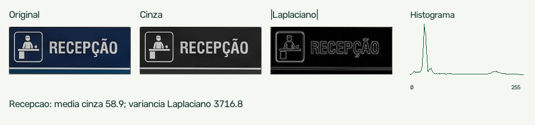
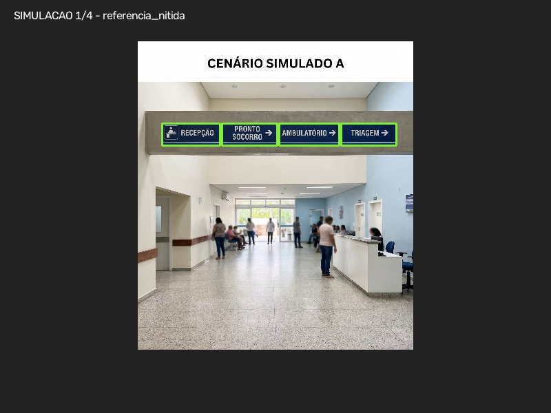
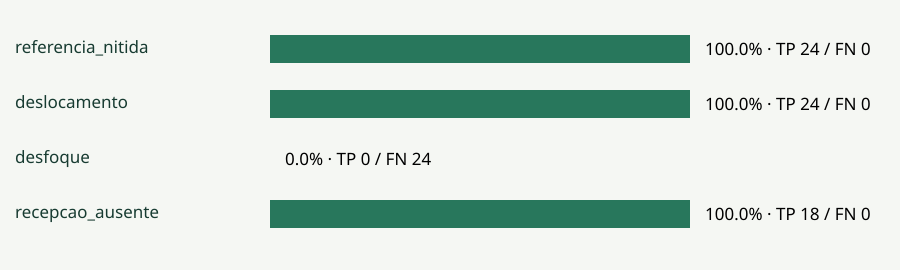

<!doctype html><html lang="pt-BR"><meta charset="utf-8"><meta name="viewport" content="width=device-width,initial-scale=1"><title>HeatCity — placas em vídeo</title><style>*{box-sizing:border-box}body{margin:0;background:#102820;color:#173b31;font:22px/1.45 system-ui,sans-serif}.slide{background:#f5f7f3;margin:32px auto;padding:50px 65px;max-width:1200px;min-height:675px;position:relative}h1{font-size:44px;line-height:1.12;letter-spacing:-1px;margin:0 0 30px}li{margin:15px 0}img{display:block;max-height:295px;max-width:90%;margin:20px auto}small{position:absolute;bottom:20px;right:35px;font-size:13px}.visual{font-size:18px}.visual li{margin:8px 0}nav{text-align:center;color:white;font-size:16px;padding:15px}nav a{color:#aff2ca}@page{size:landscape;margin:0}@media print{body{background:white}.slide{width:100vw;height:100vh;max-width:none;min-height:0;margin:0;break-after:page;padding:35px 55px}h1{font-size:36px}body{font-size:18px}nav{display:none}img{max-height:240px}}</style><nav>HeatCity · Localização e acompanhamento de placas em vídeo · <a href="../../frontend/public/detection-demo.mp4">Vídeo sintético</a> · <a href="../reports/HeatCity-deteccao-placas-exemplo.pdf">Relatório detalhado</a></nav><section id="s1" class="slide "><h1>HeatCity — placas em vídeo</h1><ul><li>Onde a placa cadastrada aparece e por quanto tempo é detectada?</li><li>Localização por template matching multiescala e acompanhamento temporal por quadros.</li><li>MVP acadêmico · Global Solution · FIAP. Demonstração sintética identificada.</li></ul><small>HeatCity · 1/12 · exemplo sintético</small></section><section id="s2" class="slide "><h1>Problema: encontrar a Recepção</h1><ul><li>Na entrada de um hospital, a placa pode ficar pequena no enquadramento, desfocada, obstruída ou semelhante às demais.</li><li>Investigar a visibilidade da sinalização apoia hipóteses para espaços coletivos mais acessíveis, relacionadas à Global Solution.</li><li>A câmera localiza a placa. Compreensão e orientação humana exigem estudo específico.</li></ul><small>HeatCity · 2/12 · exemplo sintético</small></section><section id="s3" class="slide "><h1>Mudança de rumo e escopo</h1><ul><li>O experimento ocular anterior apresentou instabilidade e não sustenta localização confiável do olhar.</li><li>O MVP atual analisa vídeo ou webcam, sem participante e sem calibração ocular.</li><li>Placas são cadastradas por imagem e recorte. Não há OCR, detecção de placas desconhecidas nem treinamento de um modelo.</li><li>Histórico ocular preservado em seção separada; nenhum resultado ocular é usado como resultado do detector.</li></ul><small>HeatCity · 3/12 · exemplo sintético</small></section><section id="s4" class="slide visual"><h1>PDI e visão computacional</h1><ul><li>1. Captura negociada e amostragem de até 2 quadros/s; largura reduzida a 800 px.</li><li>2. Cinza → recortes de referência → TM_CCOEFF_NORMED em 7 escalas fixas.</li><li>3. Similaridade ≥ 0,72 e margem espacial ≥ 0,06. Conflito entre identidades: margem 0,08.</li><li>4. Laplaciano, contraste e tamanho aparente descrevem indícios de dificuldade. Os limites são heurísticos, sem treino.</li></ul><small>HeatCity · 4/12 · exemplo sintético</small></section><section id="s5" class="slide visual"><h1>Cenário, recortes e posição</h1><ul><li>A imagem original do hospital enviada pelo usuário é preservada como estudo normal.</li><li>As AOIs delimitam Recepção, Pronto Socorro, Ambulatório e Triagem. Os retângulos encontrados são coordenadas normalizadas no quadro.</li><li>A/B originais também mudam pessoas, setas e outras placas: não isolam o efeito da posição da Recepção.</li></ul><small>HeatCity · 5/12 · exemplo sintético</small></section><section id="s6" class="slide "><h1>Por quanto tempo foi detectada?</h1><ul><li>Somar Δt apenas quando a mesma placa é detectada em dois quadros consecutivos da mesma fonte, com 0 &lt; Δt ≤ 1,5 s.</li><li>Falha, ambiguidade ou intervalo maior interrompe o trecho. Um quadro isolado representa 0 s.</li><li>Tempo do arquivo vem da mídia, não da duração de processamento. Não se prova presença contínua entre amostras.</li><li>Centros acumulados mostram a trajetória na imagem; não são mapa de calor do olhar.</li></ul><small>HeatCity · 6/12 · exemplo sintético</small></section><section id="s7" class="slide "><h1>Experimento reproduzível, sem pessoas</h1><ul><li>MP4 de 12 s / 12 FPS construído com imagem de IA: nitidez, deslocamento, desfoque e remoção da Recepção.</li><li>24 quadros decodificados; 96 anotações geométricas conhecidas. TP 66, FP 0, FN 24, TN 6.</li><li>Precisão 1.000; recall 0.733; IoU médio 0.714. A precisão alta convive com falhas de detecção.</li><li>Mesma foto de origem e quadros correlacionados: ensaio controlado e otimista, sem generalização para vídeo real.</li></ul><small>HeatCity · 7/12 · exemplo sintético</small></section><section id="s8" class="slide visual"><h1>Resultado real calculado no exemplo</h1><ul><li>referencia_nitida: TP 24, FN 0, recall 100.0%.</li><li>deslocamento: TP 24, FN 0, recall 100.0%.</li><li>desfoque: TP 0, FN 24, recall 0.0%.</li><li>recepcao_ausente: TP 18, FN 0, recall 100.0%.</li><li>A ausência de detecção sob desfoque permanece no resultado. Não se alteraram os critérios para aprovar o exemplo.</li></ul><small>HeatCity · 8/12 · exemplo sintético</small></section><section id="s9" class="slide "><h1>Análise final por placa</h1><ul><li>Recepção: 50% dos quadros detectados; 5.5 s estimados; precisão 1.000; recall 0.667.</li><li>Pronto Socorro: 75% dos quadros detectados; 8.0 s estimados; precisão 1.000; recall 0.750.</li><li>Ambulatório: 75% dos quadros detectados; 8.0 s estimados; precisão 1.000; recall 0.750.</li><li>Triagem: 75% dos quadros detectados; 8.0 s estimados; precisão 1.000; recall 0.750.</li><li>Desfoque/desaparecimento reduzem a disponibilidade. Precisão considera só anotações e não é o score de correlação.</li><li>A aplicação e o relatório consolidam causas possíveis, margens, trechos detectados, falhas e sugestões por placa.</li></ul><small>HeatCity · 9/12 · exemplo sintético</small></section><section id="s10" class="slide "><h1>Dúvidas e sugestões de local</h1><ul><li>Indícios observáveis: baixa margem entre regiões, conflito entre placas, perda de nitidez, baixo contraste, tamanho aparente pequeno e borda do quadro.</li><li>Hipóteses: posição frontal ao trajeto, antes do ponto de decisão, maior tamanho aparente, sem obstruções/reflexos; títulos e pictogramas distinguíveis.</li><li>Baixa correlação não identifica uma causa única nem determina altura ideal de instalação.</li><li>Comparar antes/depois no mesmo trajeto, câmera e iluminação, com posições reais anotadas. Não afirmar ganho de orientação humana sem testá-lo.</li></ul><small>HeatCity · 10/12 · exemplo sintético</small></section><section id="s11" class="slide "><h1>Demonstração e próxima evidência</h1><ul><li>1. Iniciar-HeatCity.cmd → Placas em vídeo → referência Cenário A.</li><li>2. Abrir vídeo demonstrativo → Iniciar análise → observar caixas e tempos.</li><li>3. Pausar → conferir anotação → exportar JSON, CSV e PDF com a análise final.</li><li>4. Próxima etapa: vídeo real das placas cadastradas; anotar posições/ausências e medir precisão, recall, IoU e falhas.</li><li>Conclusão: MVP funcional para localizar referências em quadros; acompanhamento amostrado e generalização ainda limitada.</li></ul><small>HeatCity · 11/12 · exemplo sintético</small></section><section id="s12" class="slide "><h1>Fontes e reprodução</h1><ul><li>OpenCV — Template Matching: https://docs.opencv.org/4.x/d4/dc6/tutorial_py_template_matching.html</li><li>Aula — Template matching: https://arnaldojr.github.io/cognitivecomputing/aulas/PDI/lab12/Template_matching.html</li><li>Enunciado: Cognitive Computing-GS2-2026.pdf, fornecido pela disciplina. Aderência e limites detalhados no roteiro.</li><li>scripts/build_sign_video_demo.py; scripts/build_sign_presentation.py; docs/reports/deteccao-placas-benchmark.json. Dependências congeladas no repositório.</li></ul><small>HeatCity · 12/12 · exemplo sintético</small></section><script>let i=1;addEventListener("keydown",e=>{if(e.key==="ArrowRight"||e.key==="PageDown")i=Math.min(12,i+1);else if(e.key==="ArrowLeft"||e.key==="PageUp")i=Math.max(1,i-1);else return;document.getElementById("s"+i).scrollIntoView();e.preventDefault()})</script></html>